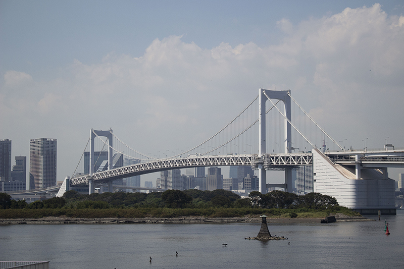
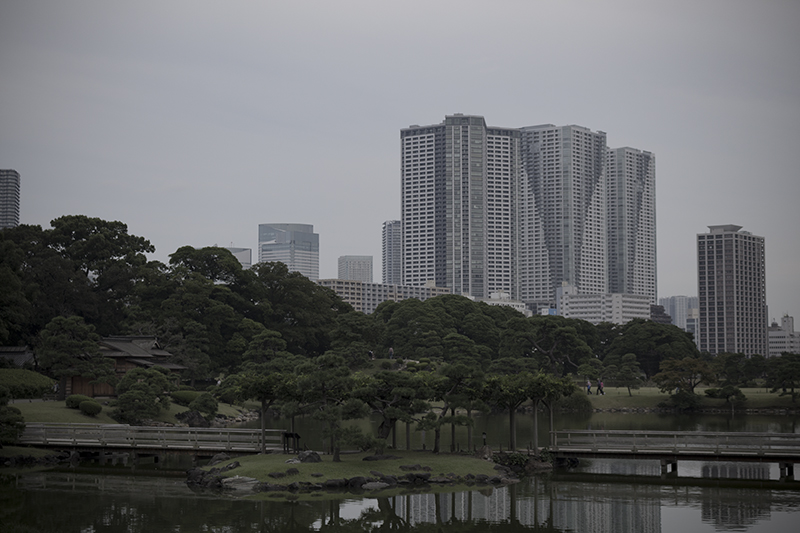
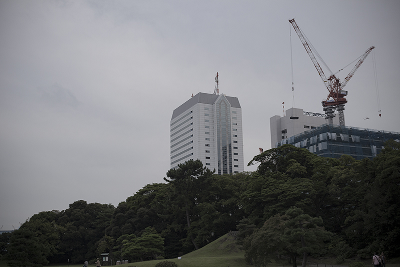
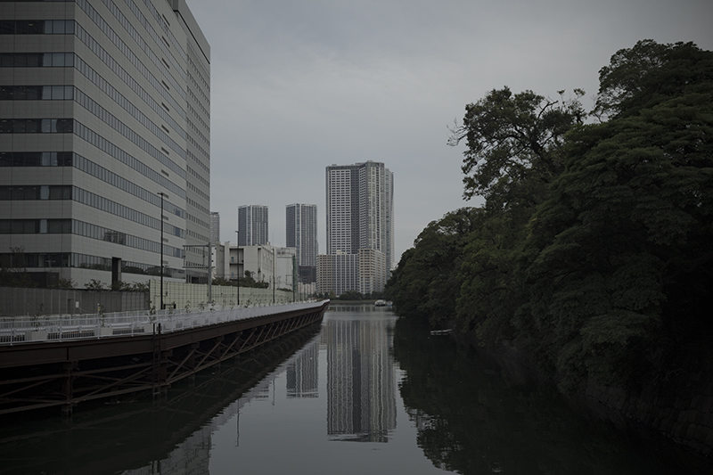
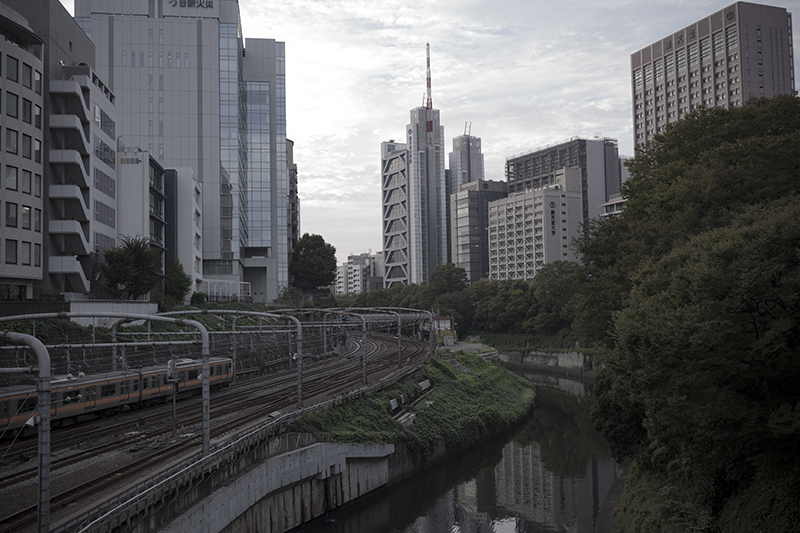
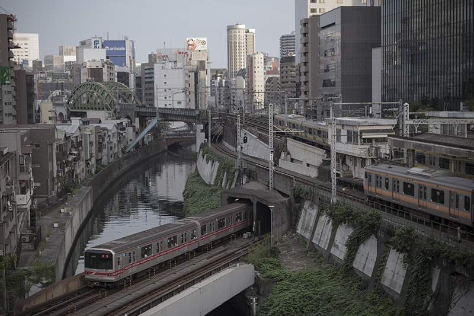
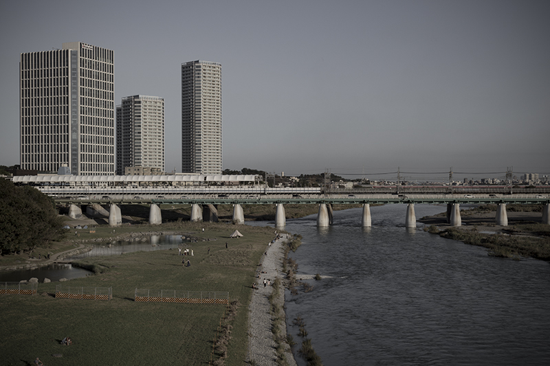
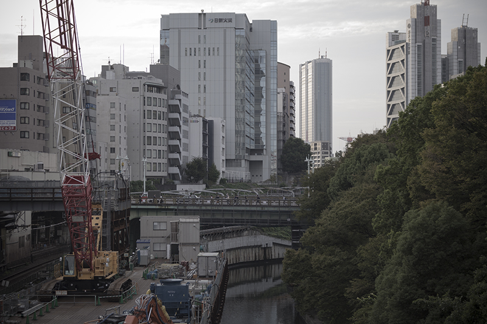
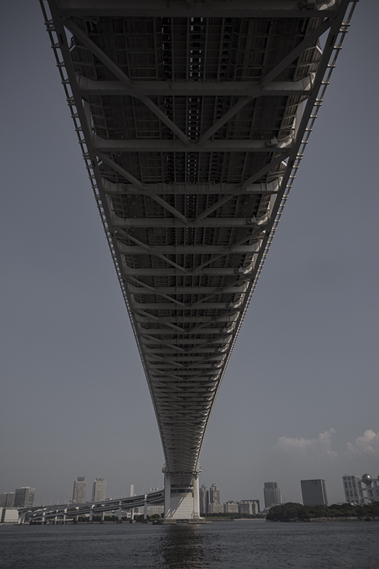

「東京」
年間課題として、各自で任意のテーマを設定し、それに従って複数の写真を撮影します。
今回私は東京を撮りたいと考えました。
ただ単純に東京の風景を撮影するだけではなく、何かテーマとして別の要素を含めることにしました。
幼い頃に訪れた東京は、ビルが立ち並び、どことなく冷たく硬く、コンクリートが広がっているような印象だった。大学進学を機に上京し１年以上が経って、多少の暖かさ柔らかさを感じることができてきたが，それでもどこか当時の印象の方が強く残ってい気がする。








